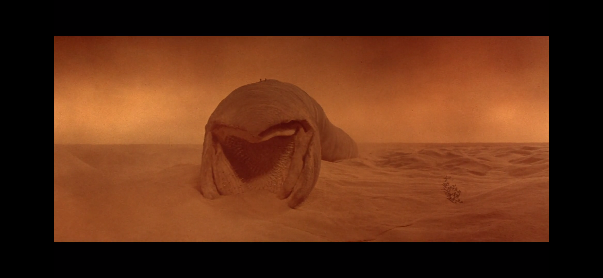
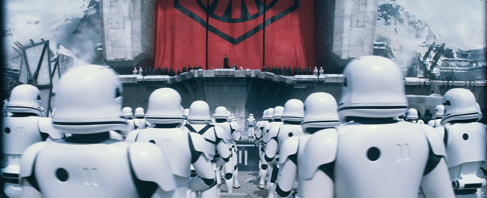

Dune Part.2 观后
乱尿几句，勿杠。
先放图。

PART ONE was the Appetizer, Then DUNE: PART TWO is the Main Course. —— Denis Villeneuve
如果星战是歌剧的话，沙丘就是史诗。
先说我感受最大的：
声效
音效的话，低频是真的足，印象最深的就那沙槌（THUMPER）的声音，敲沙地的声音很饱满。（不过为什么哈克南人尸体从山上掉下来要搞个这么大动静啊md）
配乐也是恰到好处。Hans的水平是无可否认的。温柔处温柔，如表现保崔的爱情时，着实听得出两人的甜蜜，很难不让人想到帕安两人的Across the Stars。宏伟处宏伟，很好地表现了宗教和信仰的沉重感，以及整部电影的“史诗感”。
然后说说画面好了。
视效
电影情节重心转到沙丘上来后太空相关的情节少了许多，只剩一个皇帝降临的镜头，在沙丘上重点也是部落而非城市，所以整体上类似第一部中厄拉科斯之战的先进感极强的冷色镜头少了一些，而发生在沙漠中的暖色镜头很多。尽管这些暖色镜头中也有很多如采矿车之类的科技出现，但整体上还是变得整粗犷，而非先进了。就好比从 Saints Row 3 变成 1 重置版（开玩笑的，根本没有可比性）。
还有沙虫。沙虫这东西一定是沙丘系列很大一个看点，我觉得84年那个老版沙丘变成衣驼使的原因之一（当然不是主要原因。主要原因我觉得是当时的技术、制作组的经费和导演编剧的脑子还无法驾驭这种宏大的、设定丰富的、蒙太奇手法的长篇科幻小说改编电影。尽管那时已经有了星战，但我认为星战的侧重点与沙丘实际上并不一致）就是它的沙虫长得，额，自己体会吧：

话说回来，第一部中主要表现的是保罗（和观众）初见沙虫时的震撼，第二部由于情节发展表现的主要就不是沙虫而是保罗自己了，所以类似第二部里沙虫吞噬尸体的场面比起一里吞采矿车的场面感觉就弱了些。不过这种镜头确实很难把控，搞不好就变成哥斯拉大战金刚一样了，沙丘2还算是中规中矩。
当然沙丘2画面上的亮点还是有挺多的，印象最深的就哈克南老家那段，黑白滤镜用在这里确实给力（那段的声效也是强的离谱），整体氛围及其压抑。还有一个就是皇帝飞船的镜头，极干净的金属光面与周围对比十分强烈，视觉冲击确实强。
再说说些乱七八糟的东西。
其他
沙丘2有几个瑕疵还是很明显的。
一是人物设计。斯第尔格，1中的硬骨头变成2中的无脑仆人，直接充当一喜剧角色。
二是主角光环。我知道是想表现保罗作为“救世主”的强大，还为了和第一部里哥尼交给保罗的噶腰子手法呼应，但你这挨两刀不死还能站着喘气自个儿把刀拔出来，对面倒是一刀就挂，光环打的有点太狠了吧。
三是情节设计。有几个部分详略实在不是很合理。还有些地方（比如保罗南下）渲染得有些过头了导致前后衔接出了点毛病，甚至南下之后一串略略略，跟快进了一样，看得我一愣一愣的。哥尼的这个出现完全一个机械降神，直接带来一堆核弹、权力和情节的扭转。
四是那个站皇帝边上的姐妹会老太婆被保罗吼了一声后的那句“好一个‘安静’”。这句话实在是煞氛围啊。
相对原著保罗他妹以一种迷惑的方式做掉哈克南男爵，我觉得电影改编后的这个更合理也更精彩点。
大家都知道星战基本上是把沙丘抄了个遍，但两者区别还是非常大的。
如果星战是歌剧的话，沙丘就是史诗。
整部电影处处透着宗教、信仰和命运的厚重感和沉重感，甚至压抑感。而所谓宗教、信仰、命运也不过是姐妹会幕后的阴谋。但要活下去就只能利用权力，利用宗教、信仰、命运，利用这阴谋。
“我们都是哈克南人……这就是我们活下去的出路：成为哈克南人。”
圣战已经打响，未来逐渐清晰，待到尘埃落定，Only I Will Remain。（虽然最后保罗也没有Remain。。）
看到篇文章写的非常强，这里推一个：
与你的命运和解——你是否看懂了藏在《沙丘》中的哲学隐喻？，作者：历史教师亚丘。
打个分
最后打个分吧。我给 4.5/5 或者 5/5。
尽管有些瑕疵，整体素质还是极强的，非常震撼，观感很顶。
（不禁想到某家老鼠公司拍的某系列的野史，同是科幻，差别怎就这么大嘞？）
